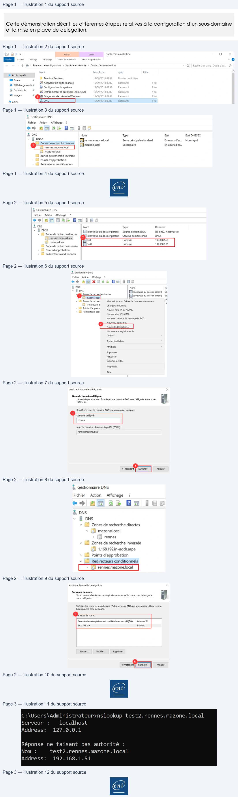

Transcription du document du Drive TSSR. La mise en forme est adaptée au Web ; les compléments IA du portail sont présentés séparément.
Services réseau en environnement Microsoft
Démonstration 04 du module 06
Cette démonstration décrit les différentes étapes relatives à la configuration d’un sous-domaine
et la mise en place de délégation.
•
Ouvrir la console MMC du service DNS.
Ouvrir la fenêtre Outils d’administration puis cliquer sur la ligne DNS (1).
•
Création d’une zone principale sur le deuxième serveur DNS
Sur le second serveur DNS, créer une zone principale (ici rennes.mazone.local) (1).
Y ajouter des enregistrements d’hôtes à l’intérieur (2).
Page 1/3
© ENI – Tous droits réservés
&l Ms
Gérer
Gérer
Outils d'administration
_
a
x
Accueil
Partage
Affichage
Outils de raccourci
Outils d'application
27
4
&
> Panneau
de configuration
> Système
et sécurité > Outils d'administration
vO | Rechercher dans: Outils d'ad.. ©
Nom
Modifié le
Type
Taille
a
at Accès rapide
Terminal Services
15/09/2018 09:19
Dossier de fichiers
II
Bureau
*
4 analyseurde performances
15/09/2018 09:12
Raccourci
2Ko
Ÿ Téléchargements#
-
FA Configuration du système
15/09/2018 09:12
Raccourci
2Ko
Fi Documents
*
.
.
#$ Défragmenter
et optimiser les lecteurs
15/09/2018 09:12
Raccourci
2Ko
=! Images
À
@BE
Diagnostic de mémoire Windows
15/09/201809:13
Raccourci
2Ko
ce PC
15/09/201809:13
Raccourci
2Ko
2.
&
Gestionnaire DNS
Fichier
Action
Affichage
?
-+2n G3 Em
i aa
@
& DNS
Nom
Type
Etat
Etat DNSSEC
*
if DNS
|
rennesmazonelocal
Zone principale standard
En cours d'ex.
Non signé
pe!
Zones derecherchedirectes | F nazonelocal
Secondaire
En cours d'ex..
©) mazonelocal
D] Zones de recherche inversée
©) Points d'approbation
(5) Redirecteurs conditionnels
ent
Services réseau en environnement Microsoft
•
Création de la délégation
Sur le premier serveur DNS, faire droit sur la zone précédemment créée (ici mazone.local) (1), puis
sur le menu Nouvelle délégation… (2). Indiquer le nom du domaine délégué (ici Rennes, qui
correspond à la zone créée sur le second serveur DNS) (3), puis cliquer sur le bouton Suivant (4).
Indiquer l’adresse IP du second serveur DNS (5), puis cliquer sur le bouton Suivant (6). Ne pas oublier
de faire des redirecteurs conditionnels afin de pouvoir résoudre correctement vos zones.
Page 2/3
© ENI – Tous droits réservés
À, Gestionnaire DNS
Fichier
Action
Affichage
?
-<+ 2m BL68 fm
is aa
& DNs
Nom
Type
Données
“i “
|
Fidentique au dossier parent)
Source de nom (SOA)
[3], dns2, hostmaster.
* D Zones dede=
Fliidentique au dossier parent)
Serveur de noms (NS)
dns.
Due
3 mazone local
-
test2
Hôte
(A)
192.168.1.51
& Zones de recherche inversée ||Ets
A
Ii Points d'approbation
© Redirecteurs conditionnels
À, Gestionnaire DNS
Fichier
Action
Affichage
?
-+ 2" x iB] aba
mn
i aa
Assistant Nouvelle délégation
x
& DNs
Nom
vy
Nom du domaine délégué
»
ij ons
Fidentique au dossier parent)
Se
L'auortéque vous avez fournie pour le domaine DNS sera déléguée à une zone
~@
Zones de recherche directes
Fidenti
d
"
*
-
ique au dossier parent)
Se
Oo)
D
M
+ I Zones de recherc
Mettre
à jour un fichier de données du serveur
Hé
Spécifier le nom de domaine DNS que vous voulez déléguer.
5 a neain
Charger à nouveau
D ornedés:
I
Points
d'approba
I] Redirecteurs com
Nouvel hôte (Aou AAAAL-
rennes
Nouvel alias (CNAME)...
Nouveau serveur de messagerie (MX).
Nom de domaine pleinement qualifié (FQDN) :
Fy — Nouveau
domain
rennes.mazone.local
|
Nouveaux enregistrements.
DNSSEC
.
Toutes les taches
7
Affichage
>
Supprimer
Actualiser
4
Exporter la liste
< Précédent
Annuler
Propriétés
Aide
Il
e
.
.
Assistant Nouvelle délégation
x
& Gestionnaire DNS
Serveursde noms
Fichier
Action
Affichage
?
Vous pouvez sélectionner un ou plusieurs serveurs de noms pour héberger la
a
eo
26
LB Em
i aS
‘Spécifiez les noms ou les adresses IP des serveurs DNS que vous voulez utiliser comme
ae
hôtes pour la zone déléguée.
ä DNS
Pure
S—~—SCSY
-
jj DNs
Nom de domaine pleinement qualifiédu serveur (FQDN)
Adresse IP
+ © Zones de recherche directes
192.168.1.9.
Inconnu
=
+ EN mazonelocal
[1 rennes
* ll Zones de recherche inversée
|) 1.168.192.in-addrarpa
Ajouter...
Modifier. | | Supprimer
(I Points d'approbation
+ [I Redirecteurs conditionnels
6
=
Poouler
[A rennes.mazonelocal
ent
Services réseau en environnement Microsoft
•
Vérification
Avant la mise en place du redirecteur, il n’était pas possible de résoudre le sous-domaine
rennes.mazone.local, c’est désormais possible.
Sur le premier serveur DNS, ouvrir une invite de commande et tester avec des commandes nslookup
Page 3/3
© ENI – Tous droits réservés
C:\Users\Administrateur>nslookup test2.rennes.mazone.local
Serveur
:
localhost
Address:
127.0.0.1
Réponse ne faisant pas autorité
:
Nom
:
test2.rennes.mazone.local
Address:
192.168.1.51
E
